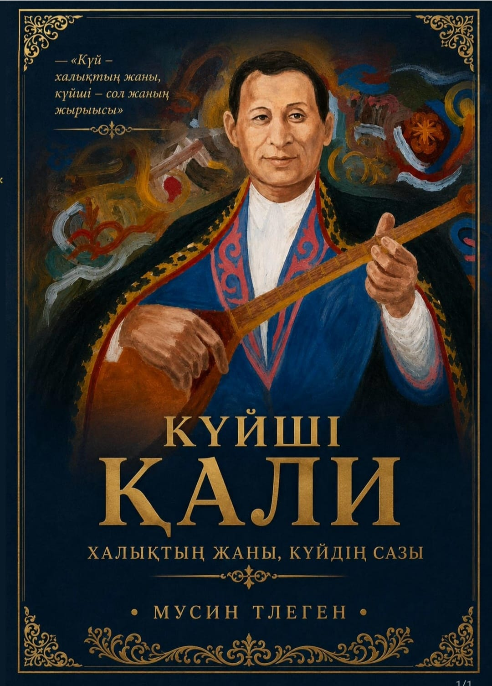

Еске алу және тағзым кітабы Күйші Қали
Күй – халықтың жаны, күйші – сол жанның жыршысы
Қазақ КСР-нің Халық артисі, Батыс Қазақстан күйшілік мектебінің ірі өкілі, Құрманғазы мен Дәулеткерейдің мұрасын бізге жеткізген күйші Қали Жантілеуовке арналған естелік жинақ.
Авторы: Тілеген Мусин

Кітап туралы
Дәстүрлі күй мектебі
Қали Жантілеуов Батыс Қазақстанның шертпе және төкпе күй дәстүрін сақтап, Құрманғазы, Дәулеткерей, Мамен мектебін үзбей жеткізді.
Оркестр және ұстаздық
Қазақ мемлекеттік академиялық халық аспаптар оркестрінің тұңғыш концертмейстері. Алматы консерваториясында шәкірт тәрбиеледі.
Еске алу мен тағзым
Кітапта күйшінің өмір жолы, замандастарының естеліктері, майдан жылдарындағы өнері және музыка тарихындағы орны баяндалады.
Өмір жолы мен мұрасы
Дүниеге келуі
Батыс Қазақстан облысы, Жаңақала ауданында туған. Бала кезінен өңірдің әйгілі күйшілерінің өнерін бойына сіңіріп, Мамен күйшіден тікелей дәріс алған.
Алматыдағы І Республикалық слет
Халық өнерпаздарының І слетінде Құрманғазының «Адай» күйін орындап, бірінші жүлде алды. Одан кейін Жұбанов ұйымдастырған оркестр құрамына шақырылды.
Майдан жылдарындағы өнер
Соғыс кезінде концерттік бригадалар құрамында майдан шебіндегі сарбаздар мен госпитальдарда өнер көрсетті.
Шәкірттері
Алматы мемлекеттік консерваториясында домбыра класынан дәріс берді. Шәкірттері: Қаршыға Ахмедияров, Нұрғиса Тілендиев, Шамғон Қажығалиев және т.б.
Тыңдау және көру
Күй жазбалары, бейнелер және мұрағаттық суреттер.
Күй тыңдау
Бейнежазбалар
Қали Жантілеуов орындауындағы күй мұрасы
Дәстүрлі домбыра өнерінің орындаушылық шеберлігі.
Құрманғазы мен Мамен күйлері
Батыс Қазақстан төкпе күй мектебінің қазынасы.
Тарихи бейне таспалар
Халық артисінің мұрағаттық жазбалары.
Күйшіге арналған естелік бағдарлама
Замандастары мен шәкірттерінің сөзі.
Суреттер
Пікірлер
Күй астанасы – Жаңақала болса, сол астананың алтын діңгегі де, заңғар биігі де Қали Жантілеуов еді. Оның саусағынан төгілген әрбір перне қазақтың ғасырлар бойғы шерін тарқатқандай болушы еді...
Әбіш КекілбаевХалық жазушысы
Қалидың домбыра тартуында өзгеше бір асқақтық, тазалық пен қайталанбас академизм бар еді. Ол – Құрманғазының тікелей музыкалық аманатын арқалап келген алып саңлақ.
Ахмет ЖұбановАкадемик, композитор
Кітап мазмұны
Жинақ дәстүрлі қазақ музыка өнерін зерттеушілерге, өнертанушыларға, консерватория студенттеріне және күй өнерін қадірлейтін оқырмандарға арналған тарихи дереккөз.
- Атауы
- Еске алу және тағзым кітабы: Күйші Қали
- Авторы
- Тілеген Мусин
- Санаты
- Өнертану, өмірбаяндық эссе
- Тілі
- Қазақша